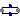
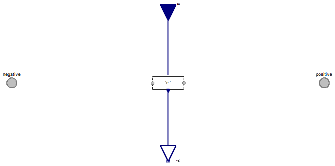
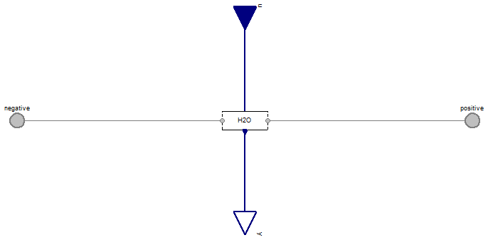

Table of Contents
- User's Guide
- Blocks
- Conditions
- Assemblies
- Regions
- Subregions
- Phases
- Species
- Chemistry
- Connectors
- Characteristics
- Units
- Quantities
- Utilities
- Icons
Download
- Latest: v0.2.4 (2014-01-22)
FCSys.Conditions.ByConnector.BoundaryBus.Pair.Phases
Conditions for a BoundaryBus connectorInformation
Extends from Modelica.Icons.Package (Icon for standard packages).Package Content
| Name | Description |
|---|---|
|  Gas | Condition for gas |
| Graphite | Condition for graphite |
| Ionomer | Condition for ionomer |
| Liquid | Condition for liquid |
| EmptyPhase | Empty condition for a phase (no species) |
 FCSys.Conditions.ByConnector.BoundaryBus.Pair.Phases.Gas
FCSys.Conditions.ByConnector.BoundaryBus.Pair.Phases.Gas
Condition for gas

Information
Extends from EmptyPhase (Empty condition for a phase (no species)).
Parameters
| Type | Name | Default | Description |
|---|---|---|---|
| Species | |||
| Boolean | inclH2 | false | Include H2 |
| Temperature | H2 | H2 conditions | |
| Boolean | inclH2O | false | Include H2O |
| Temperature | H2O | H2O conditions | |
| Boolean | inclN2 | false | Include H2 |
| Temperature | N2 | N2 conditions | |
| Boolean | inclO2 | false | Include O2 |
| Temperature | O2 | O2 conditions | |
Connectors
| Type | Name | Description |
|---|---|---|
| BoundaryBus | negative | Negative-side multi-species connector for material, momentum, and energy |
| BoundaryBus | positive | Positive-side multi-species connector for material, momentum, and energy |
| RealInputBus | u | Input bus for values of specified conditions |
| RealOutputBus | y | Output bus of measurements |
Modelica definition
model Gas "Condition for gas" extends EmptyPhase; // Conditionally include species. parameter Boolean inclH2=false "Include H2"; Boundary.Pair.Temperature H2 if inclH2 "H2 conditions"; parameter Boolean inclH2O=false "Include H2O"; Boundary.Pair.Temperature H2O if inclH2O "H2O conditions"; parameter Boolean inclN2=false "Include H2"; Boundary.Pair.Temperature N2 if inclN2 "N2 conditions"; parameter Boolean inclO2=false "Include O2"; Boundary.Pair.Temperature O2 if inclO2 "O2 conditions"; equation // H2 connect(H2.negative, negative.H2); connect(H2.positive, positive.H2); connect(u.H2, H2.u); connect(H2.y, y.H2); // H2O connect(H2O.negative, negative.H2O); connect(H2O.positive, positive.H2O); connect(u.H2O, H2O.u); connect(H2O.y, y.H2O); // N2 connect(N2.negative, negative.N2); connect(N2.positive, positive.N2); connect(u.N2, N2.u); connect(N2.y, y.N2); // O2 connect(O2.negative, negative.O2); connect(O2.positive, positive.O2); connect(u.O2, O2.u); connect(O2.y, y.O2); end Gas;
FCSys.Conditions.ByConnector.BoundaryBus.Pair.Phases.Graphite
Condition for graphite

Information
Extends from EmptyPhase (Empty condition for a phase (no species)).
Parameters
| Type | Name | Default | Description |
|---|---|---|---|
| Species | |||
| Boolean | 'inclC+' | false | Include C+ |
| HeatRate | 'C+' | C+ conditions | |
| Boolean | 'incle-' | false | Include e- |
| Temperature | 'e-' | e- conditions | |
Connectors
| Type | Name | Description |
|---|---|---|
| BoundaryBus | negative | Negative-side multi-species connector for material, momentum, and energy |
| BoundaryBus | positive | Positive-side multi-species connector for material, momentum, and energy |
| RealInputBus | u | Input bus for values of specified conditions |
| RealOutputBus | y | Output bus of measurements |
Modelica definition
model Graphite "Condition for graphite" extends EmptyPhase; // Conditionally include species. parameter Boolean 'inclC+'=false "Include C+"; ThermalDiffusive.Pair.HeatRate 'C+' if 'inclC+' "C+ conditions"; parameter Boolean 'incle-'=false "Include e-"; Boundary.Pair.Temperature 'e-' if 'incle-' "e- conditions"; equation // C+ connect('C+'.negative, negative.'C+'); connect('C+'.positive, positive.'C+'); connect(u.'C+', 'C+'.u); connect('C+'.y, y.'C+'); // e- connect('e-'.negative, negative.'e-'); connect('e-'.positive, positive.'e-'); connect(u.'e-', 'e-'.u); connect('e-'.y, y.'e-'); end Graphite;
FCSys.Conditions.ByConnector.BoundaryBus.Pair.Phases.Ionomer
Condition for ionomer

Information
Extends from EmptyPhase (Empty condition for a phase (no species)).
Parameters
| Type | Name | Default | Description |
|---|---|---|---|
| Species | |||
| Boolean | 'inclSO3-' | false | Include C19HF37O5S- (abbreviated as SO3-) |
| HeatRate | 'SO3-' | SO3- conditions | |
| Boolean | 'inclH+' | false | Include H+ |
| Temperature | 'H+' | H+ conditions | |
| Boolean | inclH2O | false | Include H2O |
| Temperature | H2O | H2O conditions | |
Connectors
| Type | Name | Description |
|---|---|---|
| BoundaryBus | negative | Negative-side multi-species connector for material, momentum, and energy |
| BoundaryBus | positive | Positive-side multi-species connector for material, momentum, and energy |
| RealInputBus | u | Input bus for values of specified conditions |
| RealOutputBus | y | Output bus of measurements |
Modelica definition
model Ionomer "Condition for ionomer" extends EmptyPhase; // Conditionally include species. parameter Boolean 'inclSO3-'=false "Include C19HF37O5S- (abbreviated as SO3-)"; ThermalDiffusive.Pair.HeatRate 'SO3-' if 'inclSO3-' "SO3- conditions"; parameter Boolean 'inclH+'=false "Include H+"; Boundary.Pair.Temperature 'H+' if 'inclH+' "H+ conditions"; parameter Boolean inclH2O=false "Include H2O"; Boundary.Pair.Temperature H2O if inclH2O "H2O conditions"; equation // C19HF37O5S- connect('SO3-'.negative, negative.'SO3-'); connect('SO3-'.positive, positive.'SO3-'); connect(u.'SO3-', 'SO3-'.u); connect('SO3-'.y, y.'SO3-'); // H+ connect('H+'.negative, negative.'H+'); connect('H+'.positive, positive.'H+'); connect(u.'H+', 'H+'.u); connect('H+'.y, y.'H+'); // H2O connect(H2O.negative, negative.H2O); connect(H2O.positive, positive.H2O); connect(u.H2O, H2O.u); connect(H2O.y, y.H2O); end Ionomer;
FCSys.Conditions.ByConnector.BoundaryBus.Pair.Phases.Liquid
Condition for liquid

Information
Extends from EmptyPhase (Empty condition for a phase (no species)).
Parameters
| Type | Name | Default | Description |
|---|---|---|---|
| Species | |||
| Boolean | inclH2O | false | Include H2O |
| Temperature | H2O | H2O conditions | |
Connectors
| Type | Name | Description |
|---|---|---|
| BoundaryBus | negative | Negative-side multi-species connector for material, momentum, and energy |
| BoundaryBus | positive | Positive-side multi-species connector for material, momentum, and energy |
| RealInputBus | u | Input bus for values of specified conditions |
| RealOutputBus | y | Output bus of measurements |
Modelica definition
model Liquid "Condition for liquid" extends EmptyPhase; // Conditionally include species. parameter Boolean inclH2O=false "Include H2O"; Boundary.Pair.Temperature H2O if inclH2O "H2O conditions"; equation // H2O connect(H2O.negative, negative.H2O); connect(H2O.positive, positive.H2O); connect(u.H2O, H2O.u); connect(H2O.y, y.H2O); end Liquid;
FCSys.Conditions.ByConnector.BoundaryBus.Pair.Phases.EmptyPhase
Empty condition for a phase (no species)

Information
Extends from FCSys.Icons.Conditions.PairShort (Short icon for a two-connector boundary condition).
Connectors
| Type | Name | Description |
|---|---|---|
| BoundaryBus | negative | Negative-side multi-species connector for material, momentum, and energy |
| BoundaryBus | positive | Positive-side multi-species connector for material, momentum, and energy |
| RealInputBus | u | Input bus for values of specified conditions |
| RealOutputBus | y | Output bus of measurements |
Modelica definition
model EmptyPhase "Empty condition for a phase (no species)" extends FCSys.Icons.Conditions.PairShort; Connectors.BoundaryBus negative "Negative-side multi-species connector for material, momentum, and energy"; Connectors.BoundaryBus positive "Positive-side multi-species connector for material, momentum, and energy"; Connectors.RealInputBus u "Input bus for values of specified conditions"; Connectors.RealOutputBus y "Output bus of measurements"; end EmptyPhase;